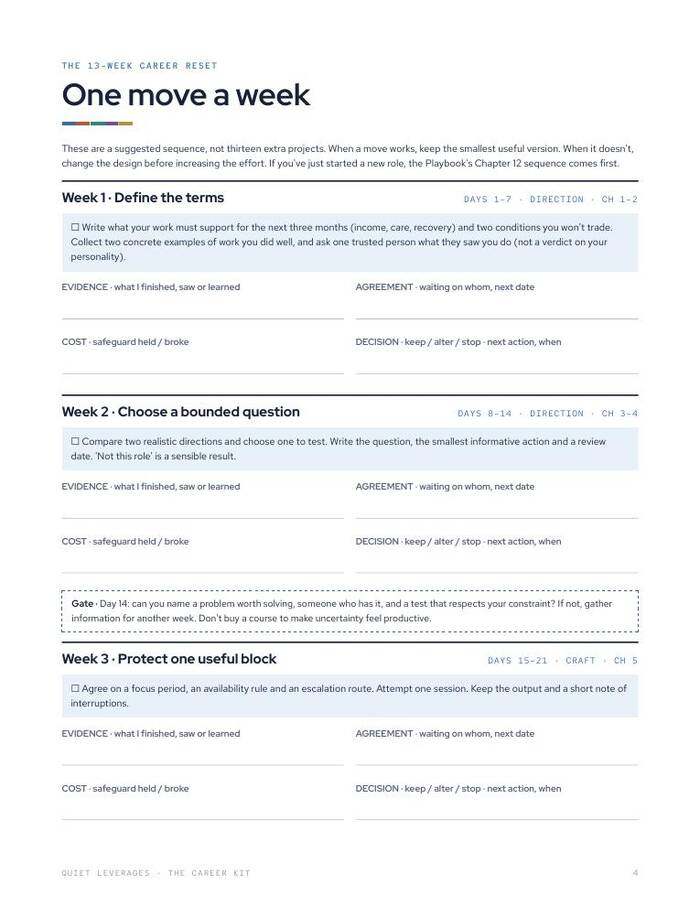
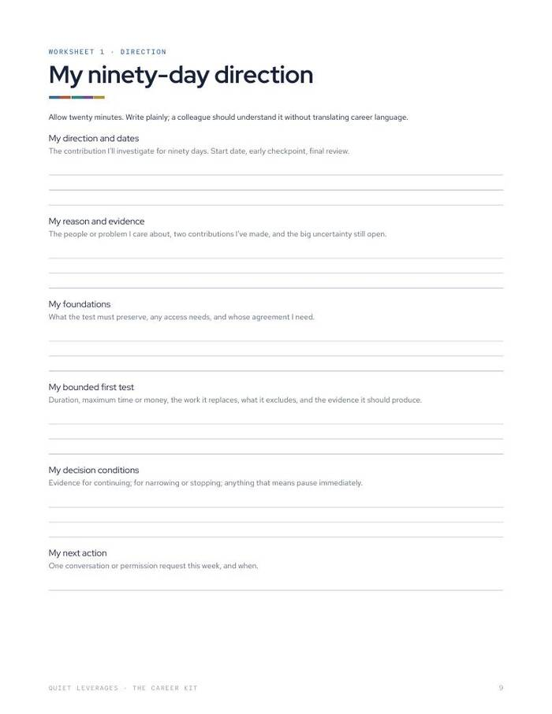
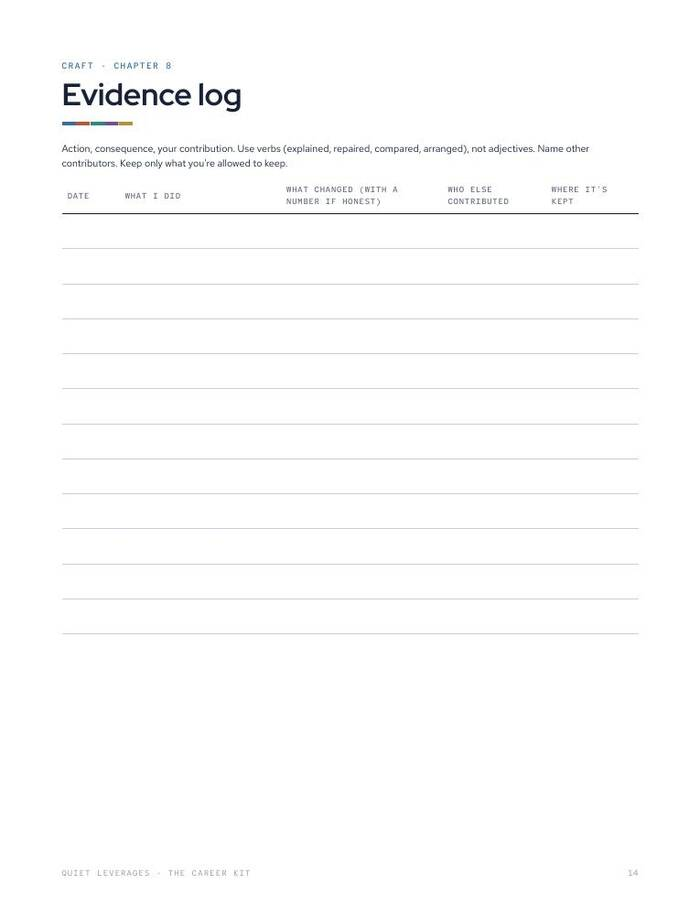
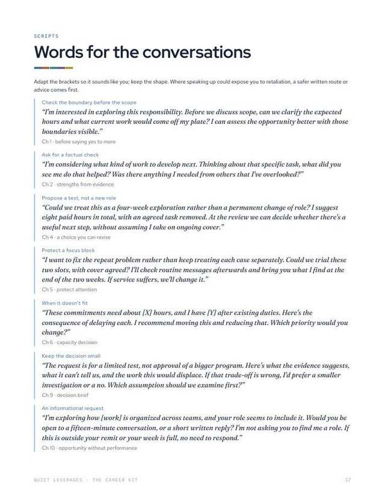

You don't need a new career plan. You need one question worth answering in ninety days.
Thirteen weeks, one move a week: a direction to test, proof of your craft, one agreement asked for, and an option with its downside protected.
Playbook and workbook PDFs, Google Sheet tracker and Notion import. Start with Day 0: twenty minutes.

One move a week
Thirteen weeks of small, named moves with decision gates, so a busy week does not stall the plan.
Evidence, not guesses
A log and a decision record that turn "should I move?" into something you can check against what happened.
Scripts for the hard parts
Fourteen scripts for the conversations that make a move real, plus AI prompts for rehearsing them.
weeks, one move each
scripts
worksheets
is the median time from starting a job search to a first offer. A career that funds your life is built over quarters, so the plan needs to be small enough to run.
Huntr, Q1 2026What thirteen weeks adds up to
A direction worth testing
A bounded question for the next ninety days, and the smallest test that would answer it.
Proof of your craft
An evidence log that records wins as verbs and numbers, ready for reviews, raises and interviews.
One agreement asked for
A bounded responsibility agreement and a one-request worksheet, with room to think.
An option with a protected downside
Try a move with a budget and stop rules, so a test does not become a leap.
A playbook, a workbook and a tracker
Read the Playbook's one-page Start here, then do Day 0 in the workbook.
- The Career Playbook (PDF). Fifty career books, five pillars, twenty chapters.
- The Career Kit workbook (PDF). Day 0, the 13-week reset with decision gates, five worksheets, evidence log, capacity check, Day-90 record, 14 scripts, AI prompts.
- Google Sheet tracker. 13 weeks, evidence log, a "does it fit" capacity check, a private terms sheet and an option-test budget with stop rules.
- Notion import. The tracker's pages, ready to bring in.
- Also included. The Raise Kit and The Stay-or-Go Worksheet.




Day 0, then thirteen weeks
Read the one-pager
The Playbook's Start here page takes about twenty minutes with Day 0.
Do Day 0
Write your position, constraint, contribution, friction, capacity and aim.
Run one move a week
Follow the 13-week reset and check the gates on the way through.
Record Day 90
Use the decision record to continue, change the approach or stop.
A good fit if your career is fine but not yours
Use this if
- You are staying in a job you have outgrown and want to test a direction on the side.
- You want proof of your work you can use in reviews and interviews.
- You prefer one small step a week over a big plan.
Skip it if
- You want a quick fix. This runs for thirteen weeks.
- You only need a raise. The Raise Kit is included, or buy it on its own.
- You want employment or legal advice. This is general education.
Why a career plan has to be small
of managers were engaged in 2025, down from 31% in 2022.
Gallup, 2026median from starting a job search to a first offer.
Huntr, Q1 2026of hires come from referrals, which are about 7% of applicants.
Jobvite and othersWhat readers say about The Career Kit
Two more tools are already inside
The Career Kit includes The Raise Kit and The Stay-or-Go Worksheet.
Start with a question worth ninety days
Launches Jan 18. One price covers the playbook, workbook, tracker and two kits.
- The Career Playbook and the Career Kit workbook (PDF)
- Google Sheet tracker and Notion import
- 14 scripts and AI prompts for rehearsing
- The Raise Kit and The Stay-or-Go Worksheet included
Before you decide
When can I get it?
The Career Kit launches Jan 18.
What format is it?
Two PDFs (the Career Playbook and the workbook), a Google Sheet tracker and a Notion import. Print the workbook or use it on a tablet.
How much time does it need?
Day 0 takes about twenty minutes. After that, one move a week for thirteen weeks, with a fifteen-minute weekly review.
Who is it for?
Mid-career managers and senior individual contributors who want evidence for a decision, not a motivational read.
Do I need the Google Sheet?
No. The workbook PDF carries the plan. The sheet adds the tracking, capacity check and option-test budget.
Is this employment advice?
No. It is a planning kit and general education, not employment or legal advice.
The next step after this one

The Quiet Reset 2027
Pick three. Keep the other nine on maintenance. A year planner for your whole life.

The Raise Kit
Seven days of preparation, one four-line ask, and what to say to every pushback.

The Stay-or-Go Worksheet
Should I quit my job? Decide on paper, not at 2 a.m.
Thirteen weeks, one move a week.
Day 0 first. Twenty minutes.
Get the Career KitLaunches Jan 18. $39, instant download on Gumroad.